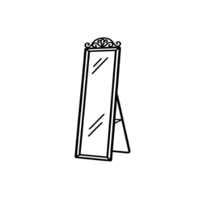

Every brand site, in your order.
Turn MYRA Mirror on in Safari Settings, under Extensions.
MYRA Mirror is on. Open a shop in Safari, click the MYRA button in the toolbar and choose Connect to MYRA.
MYRA Mirror is off. Turn it on in Safari Settings, under Extensions.